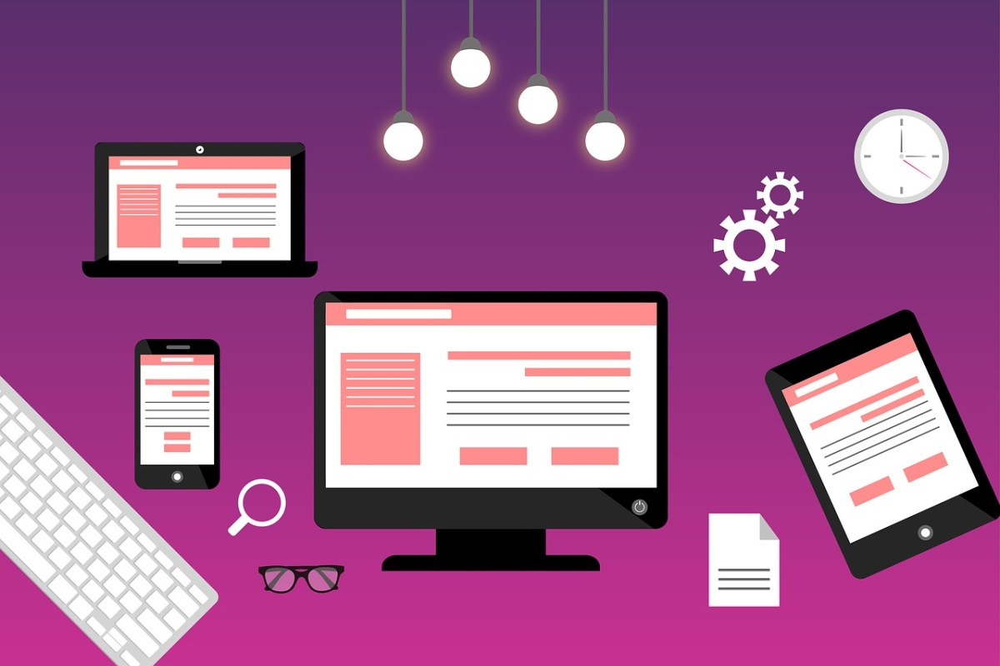

User Experience é uma área que está conquistando mais espaço e trazendo uma revolução para o processo de transformação digital no mercado financeiro. No entanto, muitos termos aparecem relacionados na área de Design e podem gerar confusão. UX, UI e Visual Design, por exemplo, possuem muitas semelhanças e proximidades e é preciso reconhecer as diferenças nas suas aplicações e entender a variedade nas suas intenções.
Muito embora apresentem conceitos muito próximos, cada um deles oferece diferentes níveis de valor para um projeto. Neste artigo, vamos apresentar o que é cada um desses termos e quais são as diferenças entre eles. Confira!
User Experience
Experiência do Usuário (UX) ainda é um tema que precisa ser mais explorado em diversas instituições financeiras. É uma área que desenvolve soluções pensando em todo o processo de interação do usuário, seja em produtos digitais ou não. A principal tarefa é lidar com as experiências dos usuários, exclusivamente na relação desses com o produto ou serviço.
Muito mais do que focar na aparência, é preciso considerar todos os aspectos que envolvem a experiência do usuário: comportamentos, emoções, preferências, crenças, percepções, respostas físicas e psicológicas. A meta do UX Design é tornar sua experiência mais amigável, natural e simples.
Além disso, UX está alinhado ao core business, verificando se as entregas atendem às necessidades e aos objetivos da empresa. Em suma, User Experience entrega uma solução que visa atender o usuário gerando experiências positivas e conciliando o que a empresa pode oferecer, ajustando essas duas condicionais.
User Interface
Já a Interface do Usuário (UI) é responsável por criar, planejar e elaborar a forma como um usuário interage e controla determinado projeto, que pode ser um aplicativo, um software, um site, um produto, entre outros.
Portanto, a função de UI é criar essa interface, a forma como o usuário irá acessar e interagir com determinada solução. Um projeto de User Interface bem sucedido é aquele que consegue antecipar as necessidades de utilização do cliente. Portanto, ela deve ser simples de aprender e fácil de usar.
No entanto, quando UI é entendido como umas das etapas de UX, todo o trabalho de pesquisa e definições de público, de mercado, de stakeholders, de funcionalidades, de interesses, entre tantas outras informações definidas pelo trabalho de User Experience, direciona o desenvolvimento de uma interface.
Visual Design
Pode até parecer que Visual Design, diante de UX e UI, é um trabalho mais simples; mas não é. Essa etapa é responsável por “deixar o projeto mais bonito”. Simplificando, a premissa é moldar a aparência de uma interface, trazendo aspectos e elementos visuais, de um ponto muito mais artístico do que científico.
O trabalho de Visual Design faz a escolha de cores, fontes, imagens, blocos de textos, ícones, traços, formatos, espaços positivos e negativos, entre diversos outros aspectos.
Visual Design pode até funcionar em alguns aspectos sem estar atrelado ao trabalho de UX. No entanto, a expectativa é que a “beleza” tenha muito mais prioridade do que a “usabilidade”.
Quando associado a UX e UI, a ideia é melhorar a experiência do usuário utilizando os elementos visuais. Esses elementos são aplicados considerando o trabalho mais “cientificamente” embasado de User Experience, ajudando a aprimorar os resultados de interação, envolvendo o usuário para aumentar sua confiança e interesse na solução apresentada pela interface. Por isso, é importante considerar como elementos visuais são recebidos pelo público-alvo.